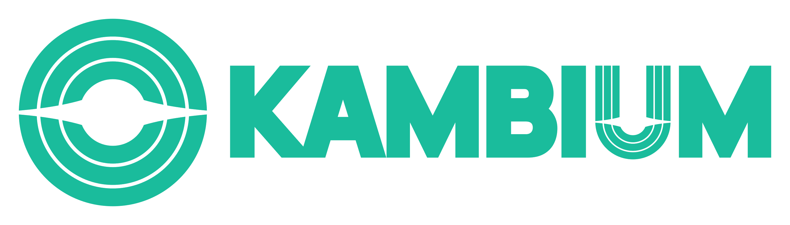

Enterprise Transformation
Aligning people, processes, and systems so enterprise technology becomes an operational advantage—not another layer of complexity.
↗01 / About
For me, good leadership begins with understanding the real problem. Not every challenge needs a bigger system, a longer project, or a more expensive answer.
I combine hands-on technical experience with project and business judgment to make decisions that are clear, responsible, and executable. I value honesty over convenient answers and sustainable outcomes over short-term appearances.
More on LinkedIn
What I'm building
Founder & Director · PT Kambium Sepanjang Masa
I founded Kambium and now lead it as Director—a technology venture focused on practical AI, business automation, enterprise solutions, and digital products. We start with the real problem, build only what creates value, and grow solutions with evidence—not hype.
Built with clarity · integrity · measurable value02 / Selected focus
Aligning people, processes, and systems so enterprise technology becomes an operational advantage—not another layer of complexity.
↗Bringing clarity to difficult projects through honest status, deliberate prioritization, and recovery plans the team can actually execute.
↗Designing practical AI-enabled products and automations that solve real business problems, start lean, and create measurable value early.
↗03 / Capabilities
I don't treat these as isolated tools. Their value comes from connecting them to the business decision, operating process, and people affected.
04 / Journey
From writing software and managing infrastructure to advising management and leading enterprise projects.
2025 — Now
IT Assistant Manager
Leading IT modernization across infrastructure, security, Microsoft 365, and enterprise systems—with a focus on making technology useful for the people who run the business.
2025 — Now
Founder & Director · AI & Digital Solutions
Building practical AI-enabled products, business automations, and enterprise solutions while advising clients on ERP, process improvement, and responsible technology decisions.
2018 — 2025
Project Delivery & Leadership
Led multidisciplinary teams and complex implementations from discovery to go-live, translating business needs into realistic scope, delivery plans, and measurable outcomes.
2011 — 2018
IT Assistant Supervisor
Developed a broad foundation across software, infrastructure, networks, servers, security, IT planning, and internal control.
How I work
“Better an honest answer that is difficult today than a comfortable answer that becomes tomorrow's problem.”